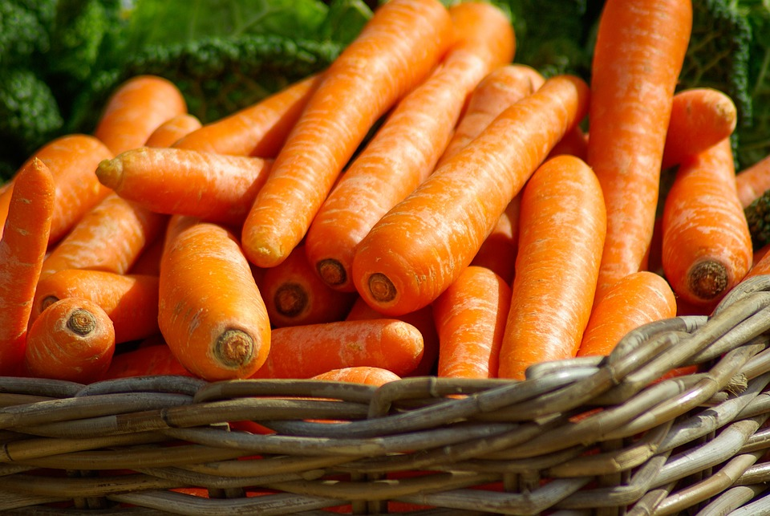
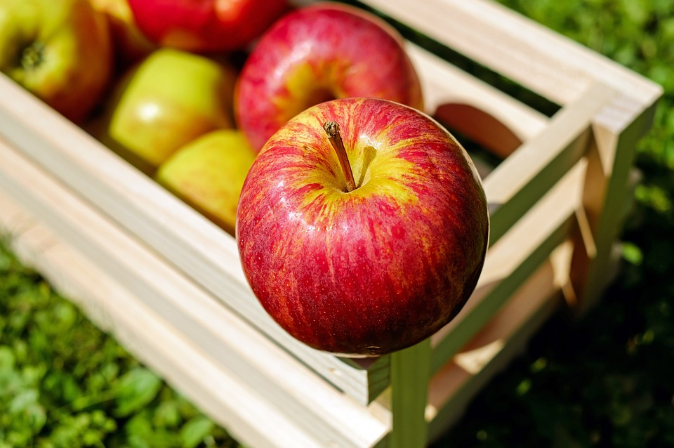
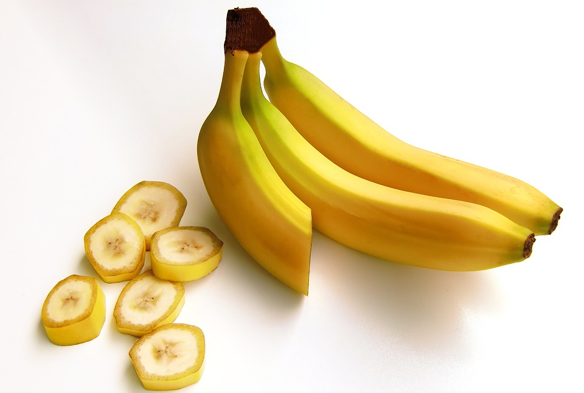
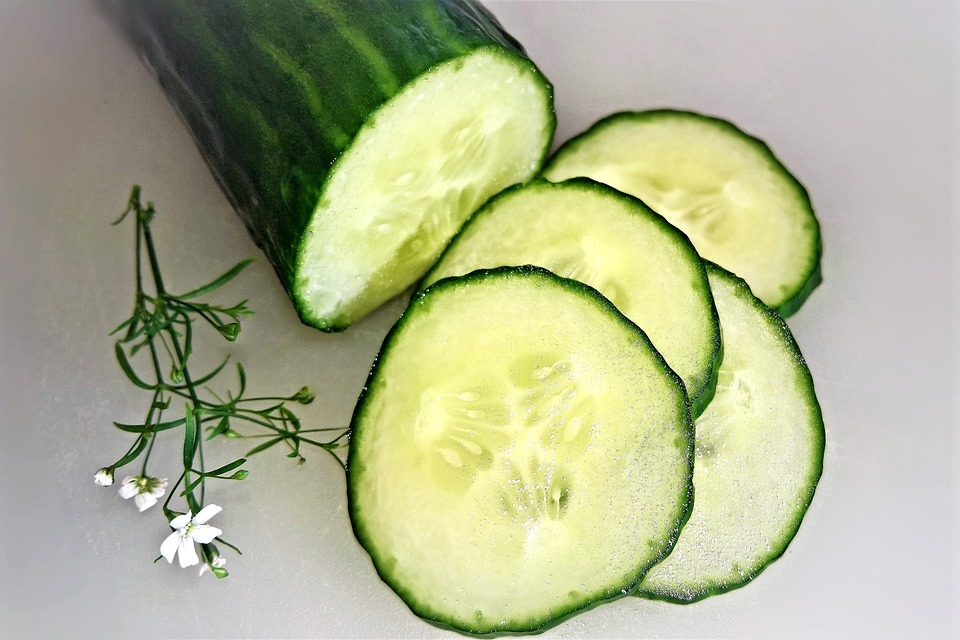
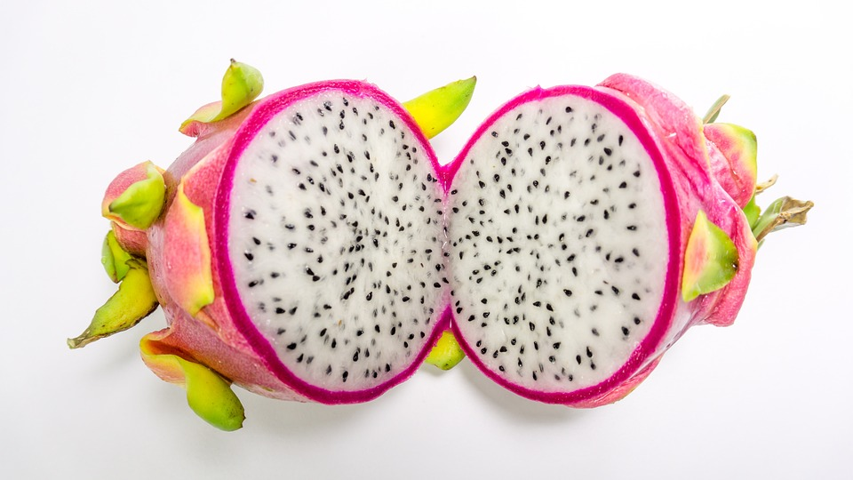
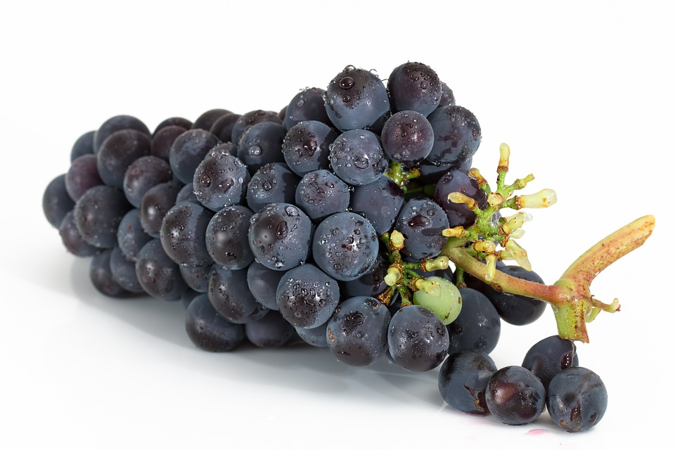
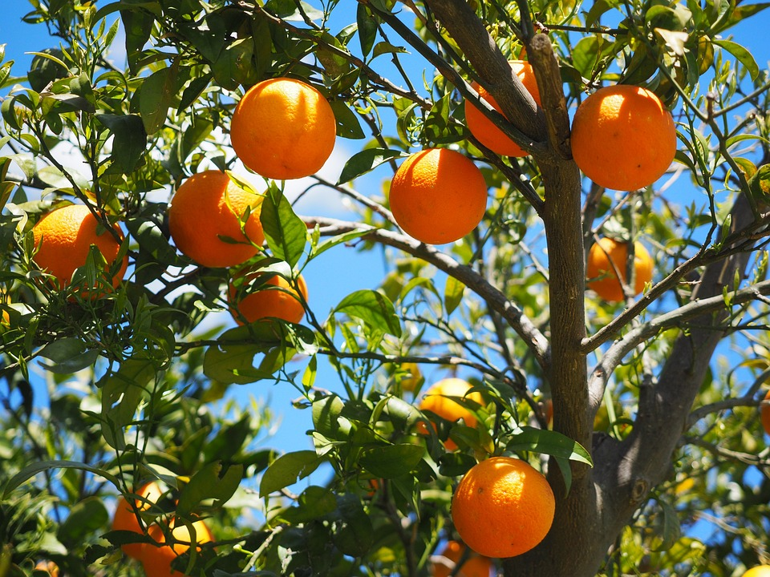
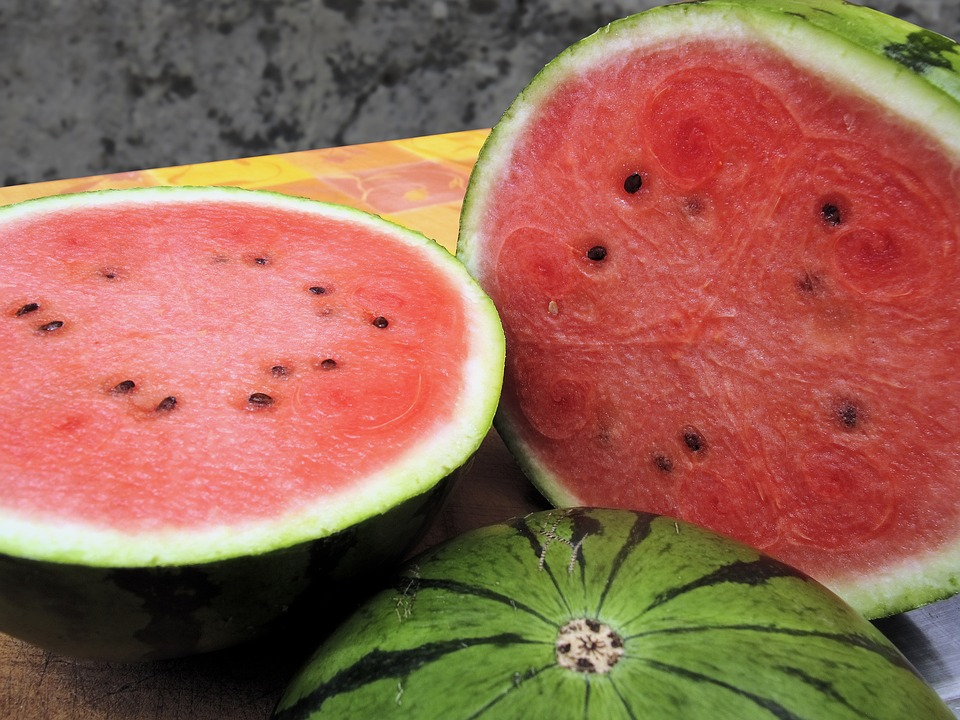
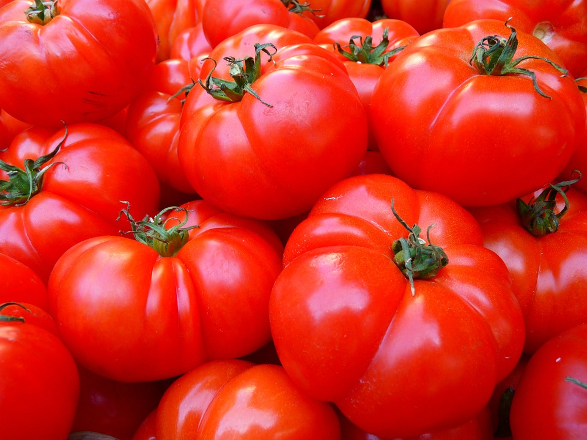

| Name |
Health Benefit |
Carrot

|
Carrots have a wealth of antioxidants and offer many health benefits.
more details at WebMD |
Apple
 |
Apples can do a lot for you, thanks to plant chemicals called flavonoids. And they have pectin, a fiber that breaks down in your gut. If you take off the apple’s skin before eating it, you won’t get as much of the fiber or flavonoids.
more details at WebMD |
Banana

|
Bananas are incredibly healthy, convenient, delicious, and one of the most inexpensive fresh fruits you can buy. This makes them an excellent choice for anyone interested in eating healthy.
more details at Healthline |
cucumber

|
All that water in cucumbers can help keep you hydrated. Plus, the fiber boost they give you helps you stay regular and avoid constipation.
more details at WebMD |
Dragon fruit

|
Dragon fruit is a food that grows on a climbing cactus called hylocereus, which you'll find in tropical regions around the world. The plant’s name comes from the Greek word "hyle," which means "woody," and the Latin word "cereus," which means "waxen."
more details at WebMD |
Grape

|
Grapes are a good source of potassium, a mineral that helps balance fluids in your body. Potassium can help bring down high blood pressure and lower your risk of heart disease and stroke. Most people don't get enough of this nutrient, so eating grapes can help fill the gap.
more details at WebMD |
orage

|
In addition to vitamin C, oranges have other nutrients that keep your body healthy. The fiber in oranges can keep blood sugar levels in check and reduce high cholesterol to prevent cardiovascular disease. Oranges contain approximately 55 milligrams of calcium, or 6% of your daily requirement.
more details at WebMD |
Pear

|
In addition to being a good source of fiber, pears are also high in vitamins C and K, as well as potassium and antioxidants. They're also especially good for gut health, and they may help keep you regular, too.
more details at WebMD |
Water melon

|
Watermelon's high water content, antioxidants, and amino acids may make for a better workout. It's also high in potassium, a mineral that could cut down on cramps at the gym. You can sip watermelon juice after you sweat, too. Doing so could help prevent muscle soreness, as long as you don't push yourself too hard.
more details at WebMD |
tomato

|
Getting more tomatoes into your diet may make you less likely to have a stroke, which is when blood flow gets cut off to a part of your brain. Studies suggest that they may ease inflammation, boost your immune system, lower your cholesterol levels, and keep your blood from clotting.
more details at WebMD |